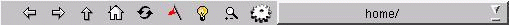

File Menu
Toolbar
First the Toolbar:

(back)
- Select this if you wish to go back to the previous page or file viewed.
(forward)
- Select this if you wish to go back to the next page or file viewed.
(Up to Parent)
- Select this if you wish to go up to the parent directory.
(home)
- Select this if you wish to go back to your home directory.
(reload)
- Select this if you wish to reload the page.
(bookmarks)
- Select this for your bookmarks.
(create new folder)
- Select this to create a new folder.
(search for a folder)
- Select this to search for a folder.
(configure this dialog)
- Select this if you wish to change the view.
- Look and Feel
- View style
- Show Short View
- show only directory and file names
- Show Detail View
- show size, permissions, and date
- Misc
- show filter
- alows you to narrow the search down by file extension
- show list labels
- shows Folders: and Contents: above their respective windows
- Show Hidden
- shows hidden files(.files)
- Show Status Line
- Use single click
- Mix dirs and files
- use 1 window for directories and files
- Keep dirs first
- shows directories before files in current directory
- about
- the authors of this fine dialog
Main Window
- Folders
- Here is where you select the folder of the file you wish to open
- Contents
- This shows the files in the selected directory you can choose
- Location
- This is the directory where you wish to start looking from it is
generally your home directory.
- Filter
- Here is where you select which type of file you are looking for
(if any types are available that is.)
- Help
- you are looking at it...or the lack thereof
written by Anonymous Newbie